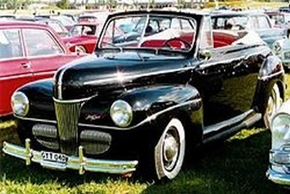
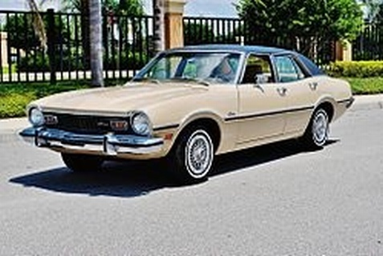

Ford Mercury fue un vehículo fabricado por Ford Motor Company en Estados Unidos, a partir del año 1941. El modelo de Ford 1937 que fue fabricado hasta el año 1940, deja su lugar al Ford 1941, totalmente diferente en su diseño, este nuevo modelo era mucho más grande y con líneas estéticas muy bien logradas. Ford lo saca al mercado con dos tipos de motores, el clásico V-8 y los seis cilindros en línea. Fue un vehículo más veloz que los creados con anterioridad, la suspensión fue mejorada, lo mismo que en su confort, haciendo de el un coche más silencioso y suave, ya que se introdujeron sistemas de aislación y resortes en los asientos para permitirle mayor suntuosidad. Las líneas eran envolventes y redondeadas.
La llave de arranque tenía un sistema de bloqueo con el volante, para darle seguridad, además del arranque eléctrico tenía una palanca, que se podía utilizar para desaflojar las tuercas de las ruedas y para darle arranque manual en caso que la batería estuviera muerta, la misma se introducía en un pequeño agujero situado en el frente del vehículo, permitiendo acoplar al motor, este sistema manual de arranque tenía un desbloqueo de seguridad.

Ford Maverick
Ford Maverick fue un automóvil creado por la Ford Motor Company de los Estados Unidos que obtuvo un gran éxito en su país de origen. Algo similar a lo que ocurrio en Argentina con el Ford Falcon, aunque este estuvo más tiempo en línea de montaje.
A finales de los años 60, aún antes de la crisis del petróleo de la década siguiente, la Ford norteamericana buscaba un coche compacto, barato y económico -por lo menos para los patrones del país- que pudiese hacer frente a la creciente demanda de coches europeos y japoneses. El modelo compacto que la fábrica tenía hasta entonces, el Falcon, no era tan compacto como se requería y ya estaba obsoleto. Aún más después de que la propia fábrica lanzó el moderno y muy exitoso Mustang en 1964. La llave de arranque tenía un sistema de bloqueo con el volante, para darle seguridad, además del arranque eléctrico tenía una palanca, que se podía utilizar para desaflojar las tuercas de las ruedas y para darle arranque manual en caso que la batería estuviera muerta, la misma se introducía en un pequeño agujero situado en el frente del vehículo, permitiendo acoplar al motor, este sistema manual de arranque tenía un desbloqueo de seguridad. El nombre de «Maverick» se deriva de la palabra rebelde relacionada a los animales salvajes, y el emblema del coche se basa en un cráneo de vaca de cuernos largos. El 17 de abril de 1969 el Maverick fue lanzado al mercado y hasta 1977 fue producido en Los Estados Unidos, y vendido en Canadá y México.La Ford lo presentó como el coche ideal para jóvenes parejas, o como el segundo coche del hogar. Con idea de ser barato de fabricar y mantener. El estilo fue claramente copiado del Mustang, más suavizado. El éxito fue inmediato y ya en el primer año fueron vendidas 579.000 unidades, una marca superior inclusive que la del propio Mustang. Cabe mencionar que el Mustang tiene el récord con 105.000 unidades vendidas tan solo el primer mes. El Maverick fue originalmente concebido y comercializado como un subcompacto «caza de importación», destinado a luchar con el Volkswagen Escarabajo y nuevos rivales japoneses.

Ford T
Ford T fue un automóvil de bajo costo producido por la Ford Motor Company de Henry Ford desde 1908 a 1927. Con el mismo se popularizó la producción en cadena, permitiendo bajar precios y facilitando la adquisición de los automóviles a la clase media, además fue el primer coche en serie del mundo.